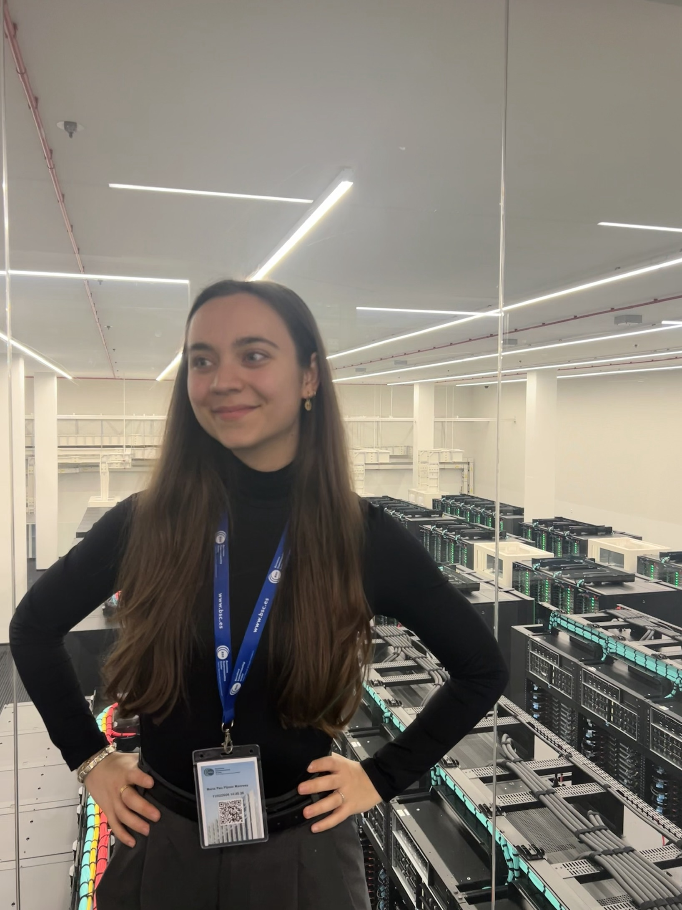
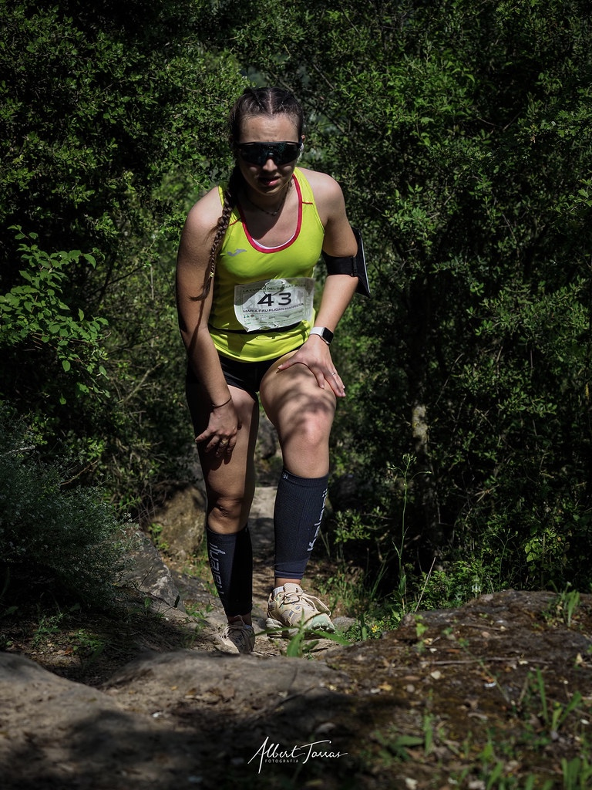
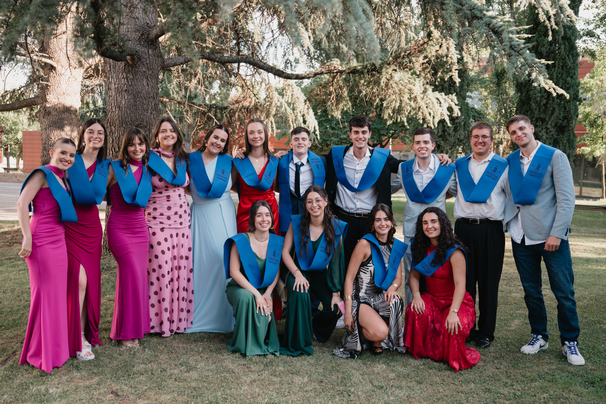

Maria
Pau
MSc student @ UPF-UB · Structural Biology · Machine Learning
Who I Am
I am a biotechnologist trained at Universitat de Lleida, with hands-on experience in molecular biology and microbiology.
Currently pursuing my Master's at Universitat Pompeu Fabra and Universitat de Barcelona in Bioinformatics for Health Sciences. My professional curiosity lies at the intersection of structural biology and physics.
Curiosity is my default setting. I spend a lot of my time diving into the world of informatics, but I'm just as happy getting lost in a foreign city or obsessing over a chess match.







Technical Expertise
Languages & Data
Structural Biology
Genomics & Sequence
Data Science & Stats
Workflow & HPC
Engineering & Cloud
Resume
Download PDFEducation
MSc in Bioinformatics for Health Sciences
Universitat Pompeu Fabra & Universitat de Barcelona
BSc in Biotechnology
Universitat de Lleida
Experience
Undergraduate Research Fellow
Ministry of Education & IRB Lleida
Undergraduate Scientific Researcher
Cell Cycle Laboratory, IRB Lleida · Cyclin D1 study
Featured Projects
RxInsight
Patient-centered web application bridging the gap between complex pharmaceutical data and everyday users.
Ligand Binding Site Predictor
Deep learning framework for predictive modeling of protein binding sites from 3D protein structures.
Pharmaceutical Database Design
Relational SQL database for tracking patients, drugs, diseases, interactions and side effects. Academic project for Databases & Web Development.
Get in Touch
I'm always open to discussing research, new projects, or opportunities.
Based in Barcelona
Campus
Campus Mar, UPF
Address
Carrer del Doctor Aiguader, 80
City
08003 Barcelona, Catalonia
Country
Spain 🇪🇸